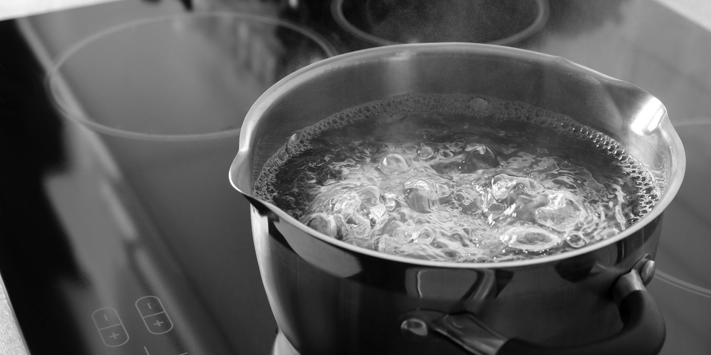

Allow water to come to a strong boil
IF YOU DONT USE SALT, IT WILL TASTE BAD
Stir ever minute or so to prevent pasta form sticking
Allow fettuccine to boil for 10-12 minutes
Allow pasta to dry for a minute
Keep stove on low to keep fettuccine alfredo warm!